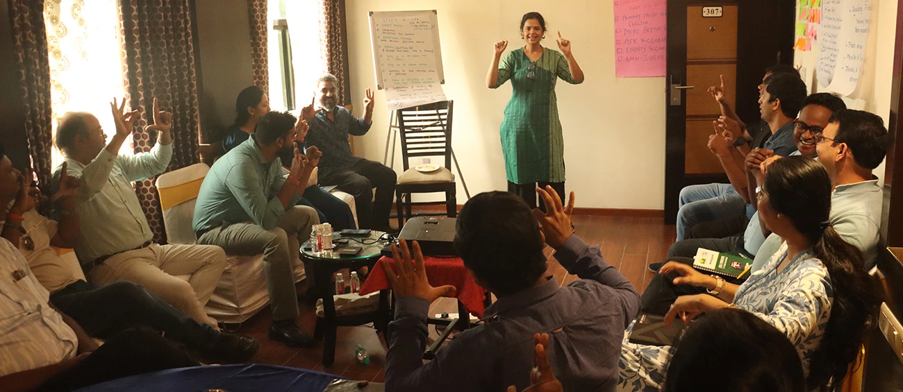

2000+
local action fundraising events held
1000+
community based organizations empowered
400+
social initiatives became locally sustainable
Community-based organisations serve as the backbone of every society’s development cycle, ensuring that government welfare initiatives and policies reach communities at the last mile. However, they frequently encounter bandwidth and resource constraints which limit their potential and influence.
Historically, the Indian development sector relied on large corporations, multinationals, and international grant making bodies for funding, making it difficult for local social projects to access. The country’s progressive policies, the expanding middle class, and CSR mandates have now created new opportunities for grassroots organisations.
Complementing the Government of India’s “Atmanirbhar Bharat” initiative, Smile Foundation’s Empowering Grassroots programme handholds, trains and supports community based organisations across India to become locally sustainable.
Empowering Grassroots is an integrated initiative, with the twin goal of catalyzing successful and meaningful social development projects, by enabling genuine community based organisations.

Providing critical investment to support the sustainability of social initiatives and encouraging them to raise part funds from locally accessible resources
Increasing the capacity of CBO for better organizational planning and local fundraising through effective communication, monitoring and reporting systems
Face-to-face and virtual training sessions were held round the year on governance, leadership, communication, fundraising and resource mobilization, along with regular follow-ups

Critical support for quality enhancement of grassroots social initiatives was extended to help the CBOs become more efficient, expand their reach and multiply the impact on ground
The trained organization and partner organizations of Smile Foundation successfully conducted local action events to raise funds and mobilize support from local stakeholders
With an aim to keep the Empowering Grassroots trainers abreast of the changing environment, new trends and practices, refreshers and TOT sessions were held from regularly
Good Governance
Leadership
Project Management
Communication
Local Action & Fundraising
Resource Mobilization
Beyond Conventional Grant-making: Empowering Grassroots goes beyond traditional grant making by building partner capacity throughout the project, rather than focusing solely on project goals.
Deeper Engagement & Investment: Standalone training sessions are one-time activities that provide no immediate benefits, and most training outcomes are difficult to quantify. Empowering Grassroots provides partners with the time and assistance they need to put their newly acquired knowledge into practice, as well as implement and sustain it.
Higher Social Return on Investment: Matching grants provide a higher social return on investment by doubling donors’ contributions and enhancing ownership of the partner and community they serve.
Local Sustainability & Community Welfare: Empowering Grassroots improves long-term sustainability and viability of community partnerships and welfare services.
We started this school in 2002 with a clear purpose— to provide education in a village where there was no English-medium school. Amchagar School is dedicated to underprivileged children, primarily serving the fishing community, which makes up 80% of our students. We also have children from farming, labor, and salt pan worker families. Today, we have around 750 students, and our staff, including teachers and other support members, totals 42. Everything you see in our school— the infrastructure, the facilities—has been made possible through the support of Smile Foundation. This partnership has been a long and meaningful journey, spanning over nine years. Smile has not only provided financial and infrastructural support but has also helped us grow step by step, fostering a deep understanding of how to develop and sustain our school.
I joined Bethany Society in 2006. One of our key initiatives is Jyoti Schrod School, an inclusive institution where children from diverse backgrounds—regardless of language, culture, ability, disability, or social status—study together. Many of these children come from remote villages across the state, making our work even more critical in bridging educational gaps. When I first engaged with fundraising, I learned that it is not just about finances. The training I received helped me understand that fundraising comes in many forms - it encompasses resources, step-by-step planning, identifying donors, and aligning priorities within our organization. The insights and knowledge they have imparted have been invaluable in helping us sustain and expand our mission. We are now in our fourth consecutive year of successful fundraising efforts.